ClassB软件库¶
IEC60730 标准概述¶
IEC 60730 是国际电工委员会（IEC）制定的关于家用和类似用途的自动电气控制装置的安全标准，适用于各类电子控制器，如温控器、定时器、电机保护器等。该标准广泛应用于家电、工业控制及智能家居设备。
标准组成¶
IEC 60730 是一个系列标准，主要包括以下部分：
| 标准号 | 适用范围 |
|---|---|
| IEC 60730-1 | 通用要求（适用于所有自动电气控制器） |
| IEC 60730-2-X | 特定类型控制器的专用要求（如温控器、电机控制器等） |
常见子标准举例：
- IEC 60730-2-9：电动水阀控制器
- IEC 60730-2-14：电动门锁控制器
- IEC 60730-2-23：温度敏感控制器（如恒温器）
核心要求¶
(1) 电气安全
- 绝缘性能：耐压测试（如 1500V AC/1min）、爬电距离和电气间隙要求。
- 防触电保护：防止用户接触带电部件。
- 过载和短路保护：确保控制器在异常情况下不会引发火灾或电击风险。
(2) 机械安全
- 结构强度：外壳防护等级（如 IP20）、机械耐久性（如按键寿命测试）。
- 防误操作：防止用户错误设置导致危险。
(3) 功能安全
可靠性和故障保护（适用于 Class A/B 控制器）：
- Class A：无安全相关功能（如普通定时器）。
- Class B：涉及安全功能（如温控器，需防止过热）。
- Class C：高安全要求（如燃气阀控制）。
失效模式分析（如短路、开路、软件故障的影响）。
(4) 环境适应性
- 温度范围（如-20°C ~ +55°C）。
- 湿度、振动、EMC（电磁兼容）测试。
与其他标准的关系¶
| 标准 | 关联性 |
|---|---|
| IEC 60335（家电安全） | IEC 60730 控制器通常用于符合 IEC 60335 的家电产品 |
| IEC 61000（EMC） | 控制器需满足电磁兼容要求 |
| UL 60730 | 北美市场适用，与 IEC 60730 技术内容基本一致 |
| GB 14536.1 | 中国国家标准，等同采用 IEC 60730-1 |
测试与认证¶
(1) 主要测试项目
- 电气安全测试（耐压、接地、泄漏电流）。
- 功能测试（控制精度、响应时间）。
- 环境测试（高温、低温、湿热）。
- EMC测试（抗干扰、辐射发射）。
(2) 适用认证
- CE认证（欧盟，需符合 EN 60730）。
- UL认证（北美，UL 60730）。
- CCC认证（中国，GB 14536.1）。
典型应用¶
- 家用电器：洗衣机、空调、冰箱的温控器和电机控制器。
- 智能家居：智能插座、照明控制器。
- 工业控制：电动阀门、泵控制器。
注意事项¶
最新版本：IEC 60730-1:2013（Ed 4.0）是当前通用标准，部分子标准已更新至2020+版本。
与软件相关：若控制器含可编程逻辑（如 MCU 控制），需评估软件安全（参考 IEC 60730-1 Annex H）。
中国市场：需符合 GB 14536.1-2022（等同 IEC 60730-1:2020）。
软件库简介¶
软件库中的测试项¶
- CPU 寄存器测试
- 时钟验证测试
- 不变存储器 FLASH 验证测试
- 可变存储器 RAM 验证测试
- 看门狗验证测试
- 控制流程检查验证测试
验证方法¶
MCU 相关故障检测¶
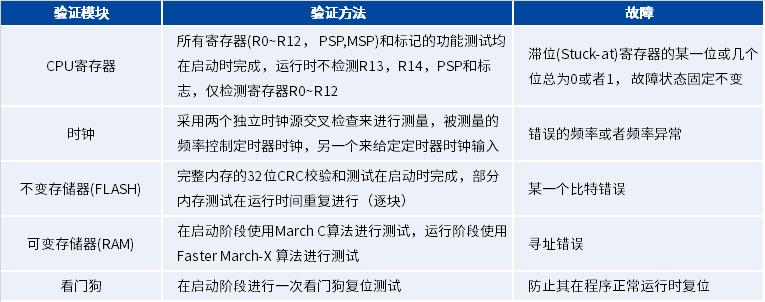
应用相关故障检测¶
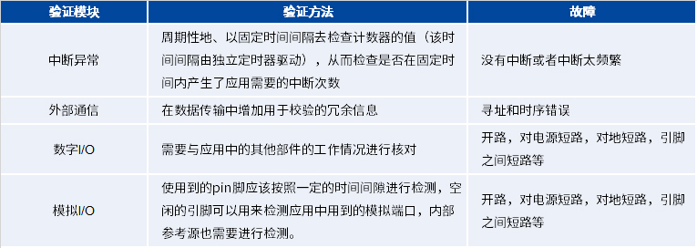
系统测试流程¶
MCU 在上电的时候会进行复位启动，在启动完成以后会进行运行自检，ClassB 系统流程如下：
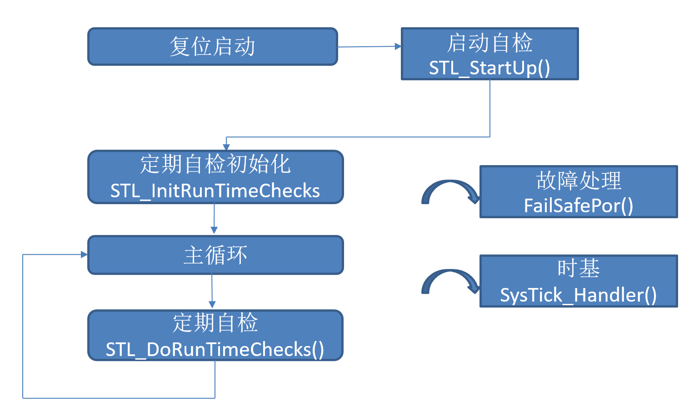
启动自检¶
CPU 寄存器进行自检操作，如果检测没有故障则进行看门狗的自检，如果有故障则进行故障的处理。看门狗自检流程与 CPU 寄存器自检的流程一致，后面依次会进行 FLASH，RAM 以及时钟自检，启动自检完成以后会进入程序的主循环函数中。
启动自检流程如下：
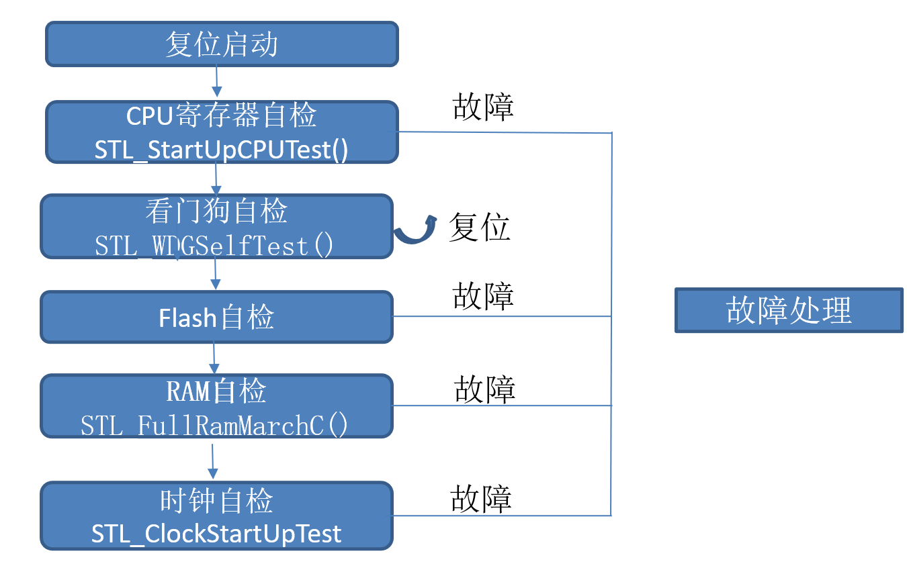
运行自检¶
在主循环中会定期的进行自检操作，在进行自检操作的时候会依次进行如下操作：CPU 寄存器的自检、栈自检、时钟自检、FLASH 自检、并设置定时器定时进行 RAM 自检，如果在自检的过程中出现故障则会进行故障的处理。
运行自检流程如下：
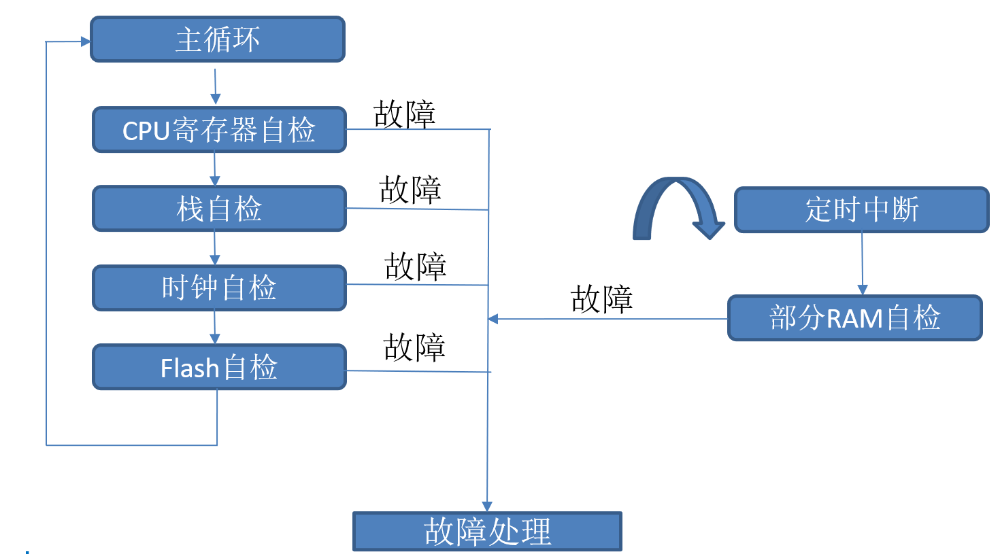
软件库移植¶
如果用户已经开发好相关的应用控制程序，只需要在原有的应用程序中添加 ClassB 的程序，操作方法如下：
-
在原有的工程框架中添加 ClassB 的相关 .c 和 .s 文件。
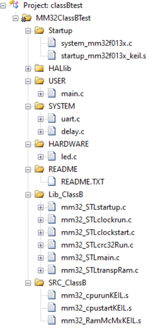 -
在执行用户程序之前，先执行相关的变量初始化及监测、校准时钟。
STL_InitRunTimeChecks(); - 设置 WWDG 和 IWDG 功能，防止其在程序正常运行时复位。
WWDG_Init(0xFF,0x7F); Iwdg_Init(IWDG_Prescaler_4, (LSI_Freq/4000-2)); - 设置启动和运行时的 RAM 和 FLASH 检测范围，CRC 校验的范围，checksum 在 Flash 中存储的位置。
STL_FlashCrc32Init(); - ClassB 变量的存储地址范围，堆栈边界检测区的位置，对检测到的故障进行处理。
- 根据具体的应用，增加用户相关的故障检测内内容，根据具体应用定义程序运行时自检的频率，相关的变量设置 MM32_STLparam.h 文件中。
- 主循环中调用STL_DoRunTimeChecks()
STL_DoRunTimeChecks();
CPU 寄存器测试¶
R0 ~ R12 我们称为通用寄存器，其中寄存器 R0 ~ R7 我们称为低寄存器，寄存器 R8 ~ R12 我们称为高寄存器，可用于数据操作。
在对 R0 ~ R12 寄存器进行操作时需要注意：绝大多数 16 位 Thumb 指令只能访问 R0‐R7，而 32 位 Thumb‐2 指令可以访问所有寄存器。
R13 作为堆栈指针 SP，SP 有两个：
- 主堆栈指针(MSP)：复位后缺省使用的堆栈指针，用于操作系统内核以及异常处理例程（包括中断服务例程）。
- 进程堆栈指针(PSP)：由用户的应用程序代码使用。
R14 称为子程序链接寄存器 LR(Link Register)，当执行子程序调用指令 (BL) 时,R14 可得到 R15(程序计数器 PC )的备份。
CPU 自检在启动时和运行时都会进行，在启动时，所有寄存器(R0 ~ R12，PSP，MSP)和标记的功能测试都会进行一次自检；运行时，周期性自检，不检测R13，R14，仅检测寄存器R0 ~ R12。
CPU 寄存器测试原理¶
在 mm32_cpustartKeil.s 与 mm32_cpurunKeil.s 文件中会对 CPU 寄存器进行测试，其中 mm32_cpustartKeil.s 文件中的测试为启动过程中对 CPU 寄存器进行的测试，mm32_cpurunKeil.s 文件中的测试为运行自检流程中的 CPU 寄存器测试，其原理为对寄存器每一位写 0 和写 1 操作，对比是否有错误。
具体实现：分别写入 0xAAAAAAAA 和 0x55555555 再进行比较是否为写入的值。
CPU 寄存器测试实现¶
以启动时 CPU 自检程序为例进行分析，将 conAA 数据定义为 0xAAAAAAAA，将 con55 定义为 0x55555555，并使用 EXPORT 指令进行声明。
conAA DCD 0xAAAAAAAA
con55 DCD 0x55555555
con80 DCD 0x80000000
conA8 DCD 0xAAAAAAA8
con54 DCD 0x55555554
EXPORT conAA
EXPORT con55
; Register R1
LDR R0, =conAA
LDR R1,[R0]
LDR R0,[R0]
CMP R0,R1
BNE CPUTestFail
LDR R0, =con55
LDR R1,[R0]
LDR R0,[R0]
CMP R0,R1
BNE CPUTestFail
MOVS R1, #0x1 ; For ramp test
Class_StartUpCPUTest PROC
EXPORT Class_StartUpCPUTest
PUSH {R4-R6} ; Safe critical registers
MOVS R0, #0x00
UXTB R0,R0
ADDS R0,#0 ; Set Z(ero) Flag
BNE CPUTestFail ; Fails if Z clear
BMI CPUTestFail ; Fails if N is set
SUBS R0,#1 ; Set N(egative) Flag
BPL CPUTestFail ; Fails if N clear
ADDS R0,#2 ; Set C(arry) Flag and do not set Z
BCC CPUTestFail ; Fails if C clear
BEQ CPUTestFail ; Fails if Z is set
BMI CPUTestFail ; Fails if N is set
LDR R0,=con80 ; Prepares Overflow test
LDR R0,[R0]
ADDS R0, R0, R0 ; Set V(overflow) Flag
BVC CPUTestFail ; Fails if V clear
; This is for control flow test (ENTRY point)
LDR R0,=CtrlFlowCnt
LDR R1,[R0]
ADDS R1,R1,#0x3 ; CtrlFlowCnt += OxO3
STR R1,[R0]
; Register R1
LDR R0, =conAA
LDR R1,[R0]
LDR R0,[R0]
CMP R0,R1
BNE CPUTestFail
LDR R0, =con55
LDR R1,[R0]
LDR R0,[R0]
CMP R0,R1
BNE CPUTestFail
MOVS R1, #0x1 ; For ramp test
; Register R2
LDR R0, =conAA
LDR R2,[R0]
LDR R0,[R0]
CMP R0,R2
BNE CPUTestFail
LDR R0, =con55
LDR R2,[R0]
LDR R0,[R0]
CMP R0,R2
BNE CPUTestFail
MOVS R2, #0x2 ; For ramp test
; Register R3
LDR R0, =conAA
LDR R3,[R0]
LDR R0,[R0]
CMP R0,R3
BNE CPUTestFail
LDR R0, =con55
LDR R3,[R0]
LDR R0,[R0]
CMP R0,R3
BNE CPUTestFail
MOVS R3, #0x3 ; For ramp test
; Register R4
LDR R0, =conAA
LDR R4,[R0]
LDR R0,[R0]
CMP R0,R4
BNE CPUTestFail
LDR R0, =con55
LDR R4,[R0]
LDR R0,[R0]
CMP R0,R4
BNE CPUTestFail
MOVS R4, #0x4 ; For ramp test
; Register R5
LDR R0, =conAA
LDR R5,[R0]
LDR R0,[R0]
CMP R0,R5
BNE CPUTestFail
LDR R0, =con55
LDR R5,[R0]
LDR R0,[R0]
CMP R0,R5
BNE CPUTestFail
MOVS R5, #0x5 ; For ramp test
; Register R6
LDR R0, =conAA
LDR R6,[R0]
LDR R0,[R0]
CMP R0,R6
BNE CPUTestFail
LDR R0, =con55
LDR R6,[R0]
LDR R0,[R0]
CMP R0,R6
BNE CPUTestFail
MOVS R6, #0x6 ; For ramp test
; Register R7
LDR R0, =conAA
LDR R7,[R0]
LDR R0,[R0]
CMP R0,R7
BNE CPUTestFail
LDR R0, =con55
LDR R7,[R0]
LDR R0,[R0]
CMP R0,R7
BNE CPUTestFail
MOVS R7, #0x7 ; For ramp test
; Register R8
LDR R0, =conAA
LDR R0,[R0]
MOV R8,R0
CMP R0,R8
BNE CPUTestFail
LDR R0, =con55
LDR R0,[R0]
MOV R8,R0
CMP R0,R8
BNE CPUTestFail
MOVS R0, #0x08 ; For ramp test
MOV R8,R0
BAL CPUTstCont
CPUTestFail
BLAL FailSafePOR
CPUTstCont
; Register R9
LDR R0, =conAA
LDR R0,[R0]
MOV R9,R0
CMP R0,R9
BNE CPUTestFail
LDR R0, =con55
LDR R0,[R0]
MOV R9,R0
CMP R0,R9
BNE CPUTestFail
MOVS R0, #0x09 ; For ramp test
MOV R9,R0
; Register R10
LDR R0, =conAA
LDR R0,[R0]
MOV R10,R0
CMP R0,R10
BNE CPUTestFail
LDR R0, =con55
LDR R0,[R0]
MOV R10,R0
CMP R0,R10
BNE CPUTestFail
MOVS R0, #0x0A ; For ramp test
MOV R10,R0
; Register R11
LDR R0, =conAA
LDR R0,[R0]
MOV R11,R0
CMP R0,R11
BNE CPUTestFail
LDR R0, =con55
LDR R0,[R0]
MOV R11,R0
CMP R0,R11
BNE CPUTestFail
MOVS R0, #0x0B ; For ramp test
MOV R11,R0
; Register R12
LDR R0, =conAA
LDR R0,[R0]
MOV R12,R0
CMP R0,R12
BNE CPUTestFail
LDR R0, =con55
LDR R0,[R0]
MOV R12,R0
CMP R0,R12
BNE CPUTestFail
MOVS R0, #0x0C ; For ramp test
MOV R12,R0
LDR R0, =CPUTstCont
; Ramp pattern verification (R0 is not tested)
CMP R1, #0x01
BNE CPUTestFail
CMP R2, #0x02
BNE CPUTestFail
CMP R3, #0x03
BNE CPUTestFail
CMP R4, #0x04
BNE CPUTestFail
CMP R5, #0x05
BNE CPUTestFail
CMP R6, #0x06
BNE CPUTestFail
CMP R7, #0x07
BNE CPUTestFail
MOVS R0, #0x08
CMP R0,R8
BNE CPUTestFail
MOVS R0, #0x09
CMP R0,R9
BNE CPUTestFail
MOVS R0, #0x0A
CMP R0,R10
BNE CPUTestFail
MOVS R0, #0x0B
CMP R0,R11
BNE CPUTestFail
MOVS R0, #0x0C
CMP R0,R12
BNE CPUTestFail
; Process Stack pointer (banked Register R13)
MRS R0,PSP ; Save process stack value
LDR R1, =conA8 ; Test is different (PSP is word aligned, 2 LSB cleared)
LDR R1,[R1]
MSR PSP,R1 ; load process stack value MRS R2,PSP ; Get back process stack value
CMP R2,R1 ; Verify value
BNE CPUTestFail
LDR R1, =con54 ; Test is different (PSP is word aligned, 2 LSB cleared)
LDR R1,[R1]
MSR PSP,R1 ; load process stack value MRS R2,PSP ; Get back process stack value
CMP R2,R1 ; Verify value
BNE CPUTestFail
MSR PSP, R0 ; Restore process stack value
; Stack pointer (Register R13)
MRS R0,MSP ; Save stack pointer value
LDR R1, =conA8 ; Test is different (SP is word aligned, 2 LSB cleared)
LDR R1,[R1]
MSR MSP,R1 ; load SP value MRS R2,MSP ; Get back SP value
CMP R2,R1 ; Verify value
BNE CPUTestFail
LDR R1, =con54
LDR R1,[R1] ; load SP value
MSR MSP,R1 ; Get back SP value
MRS R2,MSP ; Verify value
CMP R2,R1
BNE CPUTestFail
MSR MSP,R0 ; Restore stack pointer value
; Control flow test (EXIT point)
LDR R0,=CtrlFlowCntInv LDR R1,[R0]
SUBS R1,R1,#0x3 ; CtrlFlowCntInv -= OxO3
STR R1,[R0]
POP {R4-R6} ; Restore critical registers
; If next instruction is not executed, R0 will hold a value different from 0
MOVS R0, #0x1 ; CPUTEST_SUCCESS
BX LR ; return to the caller
ALIGN
ENDP
END
在汇编程序中我们会使用 CMP 指令进行判断，后面会跟着 BNE 指令，其作用就是判断如果 CMP 判断的两个寄存器不相等，则直接执行 BNE 指令后面的 CPUTestFail 函数，直接提醒错误报警，或可以添加对应的处理机制。
RAM 验证测试¶
SRAM 检测不仅检测数据区域的错误，还检测其内部地址和数据路径的错误。
检测时由于需要执行软件算法(March-C)，会影响 CPU 的利用率，所以 SRAM 测试采用拓扑模式，按位阵列推进测试，阵列中的逻辑邻位（属于单字）物理上彼此分离，而带后续逻辑地址的字对在物理上却共享邻位，此时可采用按字测试的方法。
SRAM 自检采用 March-C 算法，March-C 是一种用于嵌入式芯片 RAM 测试的算法，是安全认证的一部分，可用于测试那些未被硬件奇偶校验覆盖的部分 RAM。为了不影响 MCU 的运行，将 RAM 分成很多小块，每次测试其中一块, 先将要测试的块清零，然后按位逐位置 1，每置一位，测试该位是不是 1，是就继续，不是就报错；全部置完后，再逐位清 0，每清一个位，测试该位清 0 是不是 0，如果是就正确，不是就报错。如果是对工作区的 RAM，数据需要保留，在 RAM 中开一个安全保留区，先对安全保留区 March-C，然后把要测试的区的数据 copy 进安全区，再对要测试的工作区进行 March-C，测试 -- copy 进安全区 -- 测试 -- copy 进安全区...... 完成整个空间的测试。
在 ClassB 检测中，RAM 自检也分为启动自检与运行自检两部分。
RAM 启动自检¶
RAM 在启动自检过程中会检测全部的 RAM。算法中会用值（0x00000000）和值（0xFFFFFFFF）逐字填充，填充后读取出来比较看值是否相等。具体的运行流程图如下：
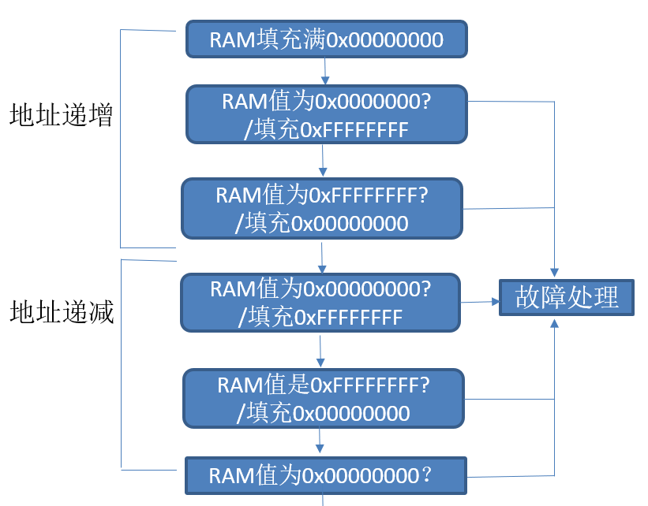
主要有6步：
- 对所有测试单元写0 (按地址增加的顺序)
- 逐个检测每个单元是否为0，如果全为0，然后写为0xFF* (按地址增加的顺序)
- 逐个检测每个单元是否为0xFF*，如果全为F，然后写为0 (按地址增加的顺序)
- 逐个检测每个单元是否为0，如果全为0，然后写为0xFF* (按地址递减的顺序)
- 逐个检测每个单元是否为0xFF*，如果全为F，然后写为0 (按地址递减的顺序)
- 逐个检测每个单元是否为0(按地址递减的顺序)
Class_FullRamMarchC
PUSH {R4-R7}
MOVS R4, #0x1 ; Test success status by default
MOVS R3,R2 ; setup inverted background pattern
RSBS R3, R3, #0
SUBS R3,R3, #1
; *** Step 1 ***
; Write background pattern with addresses increasing
MOVS R5,R0
__FULL1_LOOP
CMP R5,R1
BHI __FULL_RET
LDR R7,[R5, #+0]
STR R2,[R5, #+0]
LDR R6,[R5, #+0]
CMP R2,R6
BNE __FULL_ERR
STR R3,[R5, #+0]
LDR R6,[R5, #+0]
CMP R3,R6
BNE __FULL_ERR
STR R7,[R5, #+0]
ADDS R5,R5,#+4
B __FULL1_LOOP
; *** Step 2 ***
; Write background pattern with addresses decreasing
MOVS R5,R1
SUBS R5,R5,#+4
__FULL2_LOOP
CMP R5,R0
BLO __FULL_RET
LDR R7,[R5, #+0]
STR R2,[R5, #+0]
LDR R6,[R5, #+0]
CMP R2,R6
BNE __FULL_ERR
STR R3,[R5, #+0]
LDR R6,[R5, #+0]
CMP R3,R6
BNE __FULL_ERR
STR R7,[R5, #+0]
SUBS R5,R5,#+4
B __FULL2_LOOP
__FULL_ERR
MOVS R4,#0 ; error result
__FULL_RET
MOVS R0,R4
POP {R4-R7}
BX LR ; return to the caller
RAM 运行自检¶
RAM 在运行自检的过程中只检测部分 RAM，不会检测全部的 RAM。目前主要自检 0x20000030-0x2000007B 范围内的 RAM 以及 0x20000000-0x2000001F 缓冲区范围的 RAM，具体的操作流程如下：
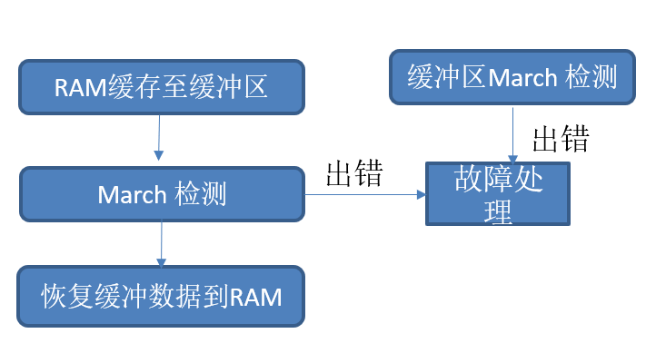
在 mm32_RamMcMxKeil.c 进行如下操作：
; ***************** test of the RAM slice *********************
MOVS R5, #0 ; NO - save content of the RAM slice into the backup buffer
__SAVE_LOOP
LDR R6,[R4, R5] ; load data offset
LDR R7,[R0, R6] ; load data from RAM
ADDS R5,R5,#4 ; original data are stored starting from second item of the buffer
STR R7,[R1, R5] ; (first and last items are used for testing purpose exclusively)
CMP R5, #20
BLE __SAVE_LOOP
; *** Step 1 ***
; Write background pattern with addresses increasing
MOVS R5, #0
__STEP1_LOOP
LDR R6,[R4, R5] ; load data offset
STR R2,[R0, R6] ; store background pattern
ADDS R5,R5,#4
CMP R5, #20
BLE __STEP1_LOOP
; *** Step 2 ***
; Verify background and write inverted background with addresses increasing
MOVS R5, #0
__STEP2_LOOP
LDR R6,[R4, R5] ; load data offset
LDR R7,[R0, R6] ; verify background pattern
CMP R7, R2
BNE __STEP_ERR
STR R3,[R0, R6] ; store inverted background pattern
ADDS R5,R5,#4
CMP R5, #20
BLE __STEP2_LOOP
/* RAM location for temporary storage of original values at run time RAM transparent test */
EXTERN uint32_t aRunTimeRamBuf[RT_RAM_BLOCKSIZE + 2] __attribute__((section("RUN_TIME_RAM_BUF")));
/* RAM pointer for run-time tests */
EXTERN uint32_t *pRunTimeRamChk __attribute__((section("RUN_TIME_RAM_PNT")));
EXTERN uint32_t *pRunTimeRamChkInv __attribute__((section("RUN_TIME_RAM_PNT")));
EXTERN uint32_t aGAP_FOR_RAM_TEST_OVERLAY[2] __attribute__((section("RUN_TIME_RAM_PNT")));
/*Note:the zero_init forces the linker to place variables in the bsssection */
/*This allows the UNINIT directive(in scatter file)to work. On the contrary */
/* all Class B variables pairs should be initialized properly by user before using them */
/* Counter for verifying correct program execution at start */
EXTERN uint32_t CtrlFlowCnt __attribute__((section("CLASS_B_RAM"), zero_init));
EXTERN uint32_t CtrlFlowCntInv __attribute__((section("CLASS_B_RAM_REV"), zero_init));
/* Counter for verifying correct program execution in interrupt */
EXTERN uint32_t ISRCtrlFlowCnt __attribute__((section("CLASS_B_RAM"), zero_init));
EXTERN uint32_t ISRCtrlFlowCntInv __attribute__((section("CLASS_B_RAM_REV"), zero_init));
/* LSI period measurement at TIM5 IRQHandler */
EXTERN uint32_t PeriodValue __attribute__((section("CLASS_B_RAM"), zero_init));
EXTERN uint32_t PeriodValueInv __attribute__((section("CLASS_B_RAM_REV"), zero_init));
/* Sofware time base used in main program (incremented in SysTick timer ISR */
EXTERN uint32_t TickCounter __attribute__((section("CLASS_B_RAM"), zero_init));
EXTERN uint32_t TickCounterInv __attribute__((section("CLASS_B_RAM_REV"), zero_init));
/* Indicates to the main routine a 100ms tick */
EXTERN __IO uint32_t TimeBaseFlag __attribute__((section("CLASS_B_RAM"), zero_init));
EXTERN __IO uint32_t TimeBaseFlagInv __attribute__((section("CLASS_B_RAM_REV"), zero_init));
/* Indicates to the main routine a 100ms tick */
EXTERN __IO uint32_t LSIPeriodFlag __attribute__((section("CLASS_B_RAM"), zero_init));
EXTERN __IO uint32_t LSIPeriodFlagInv __attribute__((section("CLASS_B_RAM_REV"), zero_init));
/* Stores the Control flow counter from one main loop to the other */
EXTERN uint32_t LastCtrlFlowCnt __attribute__((section("CLASS_B_RAM"), zero_init));
EXTERN uint32_t LastCtrlFlowCntInv __attribute__((section("CLASS_B_RAM_REV"), zero_init));
/* Pointer to FLASH for crc32 run-time tests */
EXTERN uint32_t *pRunCrc32Chk __attribute__((section("CLASS_B_RAM"), zero_init));
EXTERN uint32_t *pRunCrc32ChkInv __attribute__((section("CLASS_B_RAM_REV"), zero_init));
/* Reference 32-bit CRC for run-time tests */
EXTERN uint32_t RefCrc32 __attribute__((section("CLASS_B_RAM"), zero_init));
EXTERN uint32_t RefCrc32Inv __attribute__((section("CLASS_B_RAM_REV"), zero_init));
EXTERN uint32_t LSI_Freq __attribute__((section("CLASS_B_RAM"), zero_init));
/* Magic pattern for Stack overflow in this array */
EXTERN __IO uint32_t aStackOverFlowPtrn[4] __attribute__((section("STACK_BOTTOM"), zero_init));
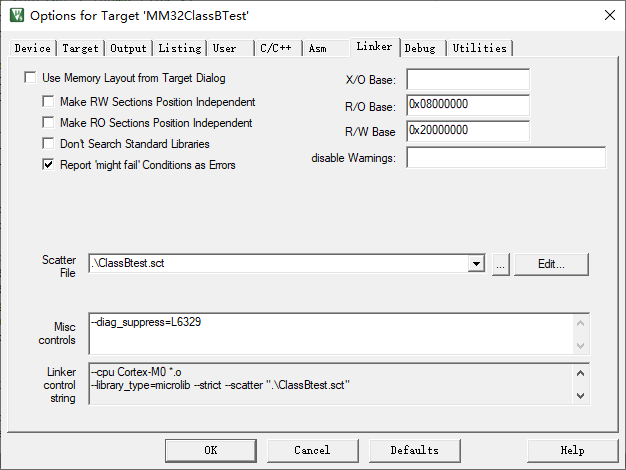
在 ClassBtest.sct 文件中可以看到如下结果：
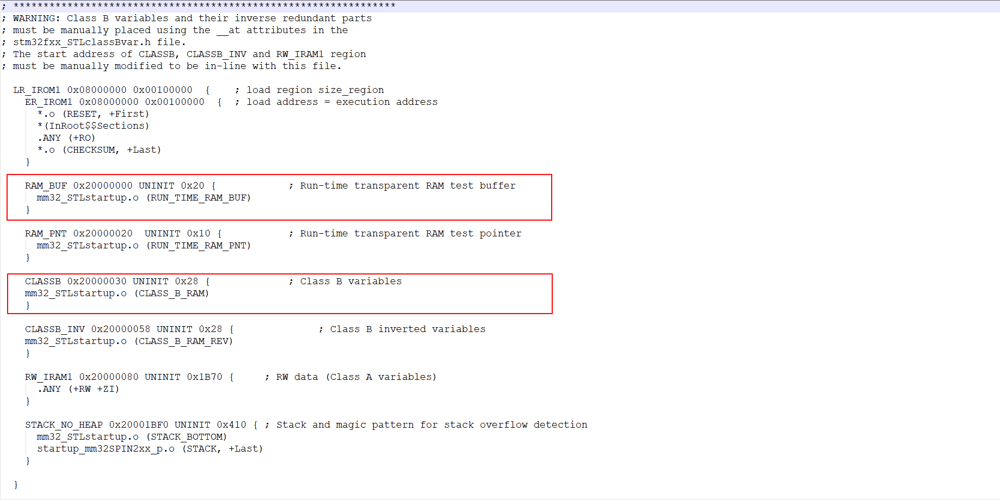
栈检查的操作原理：设定特定的值在栈底，当检测到栈底的数值发生变化了，就认为栈溢出了。
control_flow_call(STACK_OVERFLOW_TEST);
aStackOverFlowPtrn[0] = 0xEEEEEEEEuL;
aStackOverFlowPtrn[1] = 0xCCCCCCCCuL;
aStackOverFlowPtrn[2] = 0xBBBBBBBBuL;
aStackOverFlowPtrn[3] = 0xDDDDDDDDuL;
control_flow_resume(STACK_OVERFLOW_TEST);
/** * @brief This function verifies that Stack didn't overflow * @param : None * @retval : ErrorStatus = (ERROR, SUCCESS) */
ErrorStatus STL_CheckStack(void)
{ ErrorStatus result = SUCCESS;
CtrlFlowCnt += STACK_OVERFLOW_CALLEE;
if ( aStackOverFlowPtrn[0] != 0xEEEEEEEEuL )
{
result = ERROR;
}
if ( aStackOverFlowPtrn[1] != 0xCCCCCCCCuL )
{
result = ERROR;
}
if ( aStackOverFlowPtrn[2] != 0xBBBBBBBBuL )
{
result = ERROR;
}
if ( aStackOverFlowPtrn[3] != 0xDDDDDDDDuL )
{
result = ERROR;
}
CtrlFlowCntInv -= STACK_OVERFLOW_CALLEE;
return (result);
}
FLASH 验证测试¶
测试 Flash 存储器完整性时，需要用到 CRC 校验，在参考代码中我们使用了硬件的 CRC 单元，通过硬件 CRC 生成器完成的 CRC 计算大大降低 CPU 负载。
Flash 存储器测试的范围由用户界定，在运行时，如果整个内存范围因测试时间太长而不能接受，用户可将其分成若干片段，Flash 存储器测试范围由用户界定，我们需要对被测试区域进行动态修改，以便在那些区域单独执行测试。
检查区域的边界必须与测试中用到的多重测试块的大小一致。根据 mm32_STLparam.h 文件中定义的参数 FLASH_BLOCK_WORDS，块大小默认设为 16 字（ 64 字节），检查中未使用的内存区域可通过预定义值来识别。
我们会将 CRC 校验值存储在某一个地址，然后将 CRC 计算结果与相应的参考值进行比较，参考模式可由编译器（ IAR™）自动提供或由在外部计算后由最终用户添加（ MDK-ARM™和 AC6）。
在 ClassB 检测中，Flash 存储器检测也分为启动自检与运行自检两部分。
启动时对 FLASH 的检测方法：
- 编译时计算整个 FLASH 的 CRC 校验值，并存储在 FLASH 末尾位置；
- 启动时，用同样的算法重新计算整个 FLASH 的 CRC 校验值（不包括前面存储在 FLASH 中的 CRC 校验值），并与存储在 FLASH 中的 CRC 校验值做比较
函数为：
void STL_StartUp(void);
运行时对 FLASH 的检测方法：
- 对 FLASH 分块逐次计算出最终的 CRC 校验值；
- 将最终结果与正确的CRC校验值做比较
函数为：
ClassBTestStatus STL_crc32Run(void);
FLASH 验证方法¶
FLASH 的验证分为 2 个步骤，如下所示：
- 读取 PC 端计算 FLASH 对应的 CRC 值。
- MCU 运行计算出来的 CRC 值与读取到的 PC 端计算的 CRC 值进行比较。
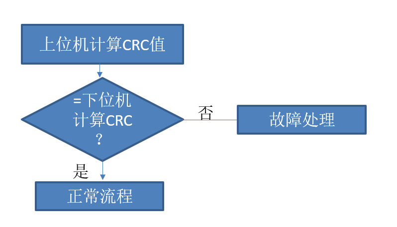
设置 IAR 生成 CRC¶
- IAR可以很方便的支持在编译时计算 CRC32，并存储在 FLASH 指定位置。
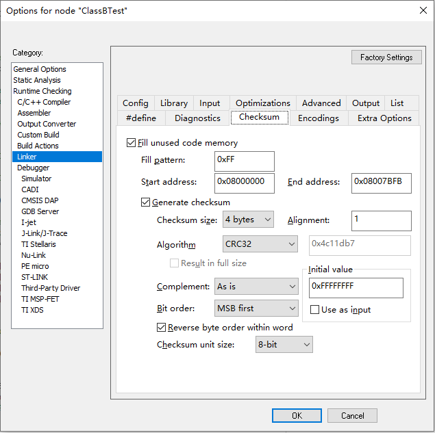- Fill unused code memory：定义了 FLASH 中需要计算 CRC 的范围和空闲字节填充值；
- Checksum size：选择 checksum 的大小（字节数）；
- Alignment：指定 checksum 的对齐方式，不填的话默认 2 字节对齐；
- Algorithm：选择 checksum 的算法；
- Complement：是否需要进行补码计算，选择 “As is” 就是不进行补码计算；
- Bit order：位输出的顺序，MSB first，每个字节的高位在前；LSB first，每个字节的低位在前；
- Reverse byte order within word：对于输入数据，在一个字内反转各个字节的顺序；
- Initial value：checksum 计算的初始化值；
- Checksum unit size：选择进行迭代的单元大小，按 8-bit，16-bit 还是 32-bit进 行迭代。
- 指定 checksum 在 FLASH 中的存储位置——修改 linker 文件：
place at end of ROM_region { ro section .checksum };
设置 Keil 生成 CRC¶
在 Keil 中需要单独计算 CRC 的值，并手动添加代码将其放在 FLASH 末尾。
当 MDK 在工程编译完成以后会在 option for target ->User 页面下面，勾选 After build/Rebuild 中的 Run#1 选项，则会在工程编译完成以后执行 After build/Rebuild 中的 Run#1 选项后面 User Command 路径选择中选择的脚本（crc_gen_keil.bat脚本）。
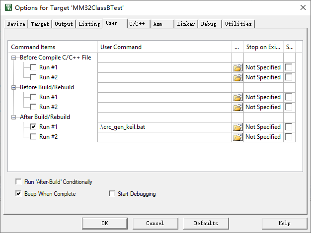
- SREC_PATH：设定工具路径；
- TARGET_NAME：生成 Hex 文件名；
- MAP_FILE：原始生成的 map 文件；
- INPUT_FILE：原始生产的 HEX 文件；
- OUTPUT_FILE：计算 CRC 后的 CRC 文件；
REM Path configuration
SET SREC_PATH=C:\SREC
SET TARGET_NAME=CLASSBTEST
SET TARGET_PATH=OBJ
SET BYTE_SWAP=1
SET COMPARE_HEX=1
SET CRC_ADDR_FROM_MAP=1
REM Not used when CRC_ADDR_FROM_MAP=1
SET CRC_ADDR=0x08007ce0
执行 SET 批处理命令，将相关的文件赋值给相对应的变量。
REM Derived configuration
SET MAP_FILE=%TARGET_PATH%\%TARGET_NAME%.map
SET INPUT_HEX=%TARGET_PATH%\%TARGET_NAME%.hex
SET OUTPUT_HEX=%TARGET_PATH%\%TARGET_NAME%_CRC.hex
SET TMP_FILE=crc_tmp_file.txt
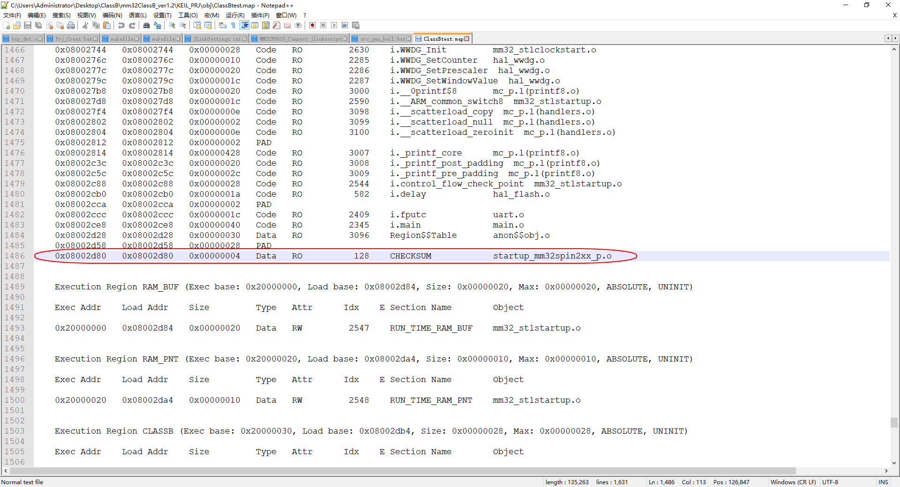
在启动文件中设置 CRC¶
AREA CHECKSUM, DATA, READONLY, ALIGN=6
EXPORT __Check_Sum
ALIGN
__Check_Sum DCD 0x8A7A061D;
END
配置硬件 CRC¶
MM32 的 CRC 初始化配置较简单，使能 CRC 时钟，复位 CRC 计算单元 即可。
RCC_AHBPeriphClockCmd(RCC_AHBENR_CRCEN,ENABLE);
CRC_ResetDR();
for(index = 0; index < (uint32_t)ROM_SIZEinWORDS; index++)
{
CRC->DR = __REV(*((uint32_t *)ROM_START + index));
}
crc_result = CRC->DR;
运行中计算 FLASH 中的 CRC¶
把要计算的 FLASH 大小分成多块累计计算 CRC。
uint32_t index;
for(index = 0; index < (uint32_t)FLASH_BLOCK_WORDS; index++)
{
CRC->DR = __REV(*(pRunCrc32Chk + index));
}
pRunCrc32Chk += FLASH_BLOCK_WORDS;
pRunCrc32ChkInv = ((uint32_t *)~((uint32_t)pRunCrc32Chk));
result = TEST_RUNNING;
MCU 运行中计算的 CRC 的数值与 PC 端计算的 CRC 数值进行比较，如果两者计算的 CRC 的数值相同则 FLASH 验证通过，否则验证失败。
启动时对比结果：
#if defined(__CC_ARM) || defined(__GNUC__)
if(crc_result != *(uint32_t *)(&REF_CRC32))
#endif
{
#ifdef STL_VERBOSE_POR
printf("FLASH 32-bit CRC Error at Start-up\n\r");
#endif /* STL_VERBOSE_POR */
FailSafePOR(); //for ROM test realse must open;
//control_flow_resume(CRC_TEST_CALLER);
}
else
{ /* Test OK */
#ifdef STL_VERBOSE_POR
printf(" Start-up FLASH 32-bit CRC OK\n\r");
#endif /* STL_VERBOSE_POR */
control_flow_resume(CRC_TEST_CALLER);
}
if(CRC->DR == *(uint32_t *)(&REF_CRC32))
{
result = TEST_OK;
}
else
{
//result = TEST_OK ; // for ROM test realse must open;*******
result = TEST_FAILURE;
}
时钟验证测试¶
MCU内部有4个时钟源：
- 外部高速时钟源(HSE)：外部晶振选择范围为 2-24MHz
- 外部低速时钟源(LSE)：可以使用一个 32.768KHz 的晶体/陶瓷谐振器构成的振荡器产生
- 内部高速时钟源(HSI)：HSI振荡器的典型频率为 48MHz
- 内部低速时钟源(LSI)：LSI振荡器的典型频率为 40KHz
MCU有时钟安全系统(CSS)模块，除了 MCU 的硬件时钟安全机制之外，还可以结合软件对系统时钟进行检测保障安全。
在出厂时，两个内部时钟的精度会校准在 ±1% 以内，但是两个时钟源在环境温度下精度特性表现不尽相同，具体的特性参数可以查看芯片数据手册，因此检测的极限限定值需要参考芯片的特性进行设定。
系统时钟自检的检测方法就是采用两个独立时钟源交叉检查来进行测量，被测量的频率控制定时器时钟，另一个来给定定时器时钟输入。例如，使用内部低速 RC 振荡器时基(LSI)可检测外部晶振的错误频率。
两个独立时钟源交叉检查来进行测量有两种实现方式：
- 运行 IWDG 或 RTC(LSI) 和 WWDG 或 SysTick(HSE) 进行计数比较，这种实现方式需要支持硬件的 RTC 或者 IWDG 中断方式。
- 通过输出 LSI 时钟利用另外一个高速时钟的定时器来捕获该频率，然后计算差值。
在这里需要 MCU 支持一个功能，LSI 输出频率内部可以通过定时器来捕获，在 MM32F013x 系列中硬件支持该功能，无需外部 MCO 输出 LSI 连接另外一个 TIMx_CHx 去捕获计数，LSI 内部硬件直接输出到 TIM2\3通道捕获，无需额外的引脚互联。
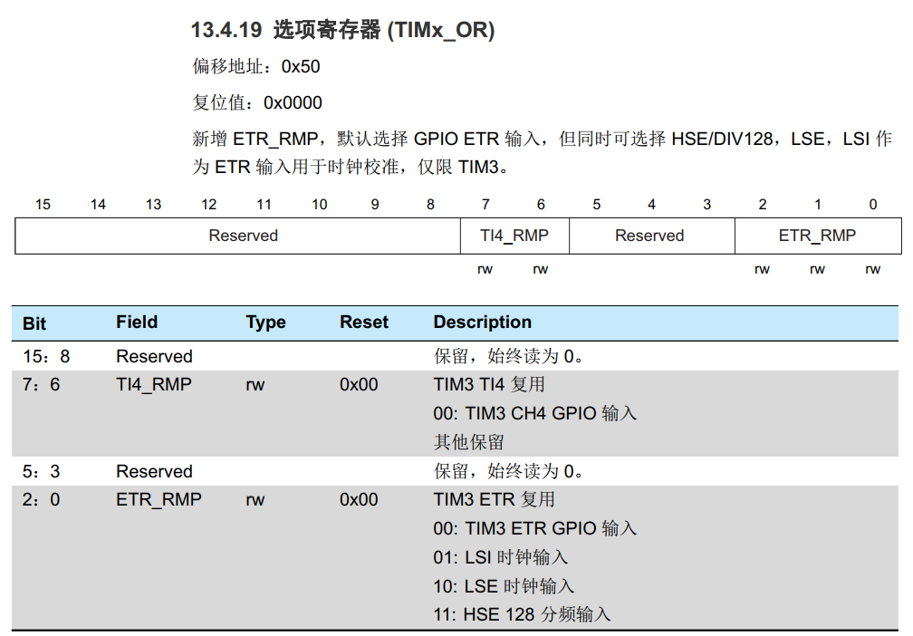
同样，在 ClassB 检测中，系统时钟自检也分为启动自检与运行自检两部分。
时钟启动自检¶
第一步，内部低速时钟（LSI）源启动。
第二步，外部高速时钟源（HSE）启动，由 HSE 作为时钟源的 PLL 设为系统时钟。
第三步，专用计时器初始化，用于 HSE 频率的交叉参考测量，由预先定义的 LSI 周期数控制。该定时器计数器连续两次获取的值不同，从而可得出 LSI 和 HSE 频率之间的比率。获取的值及其差别在定时器信道的定期中断服务期间处理。将比率测量与预期范围相比较，如果与标称值的差超过 ±20%，则报错。范围由宏 HSE_LimitHigh() 和 HSE_LimitLow() 根据一些常量定义在 mm32_STLparam.h 文件中定义。
用户负责正确输入这些宏，并考虑这些限值是否能保持恒定，或这些限值是否根据应用而动态调整（例如，由于整个温度范围内参考时钟信号的准确性）。
第四步，测试完成后，CPU时钟切换回默认HSI源。
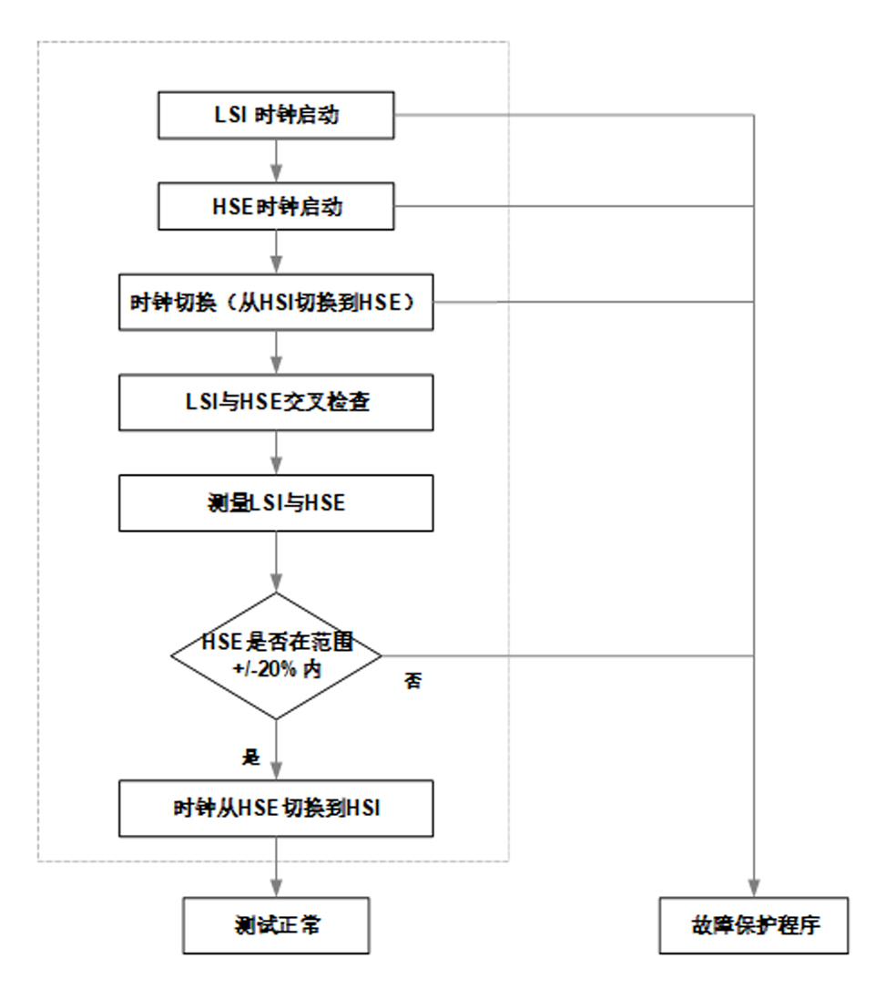
时钟运行自检¶
时钟运行时自检采用与启动自检相似的程序，时钟交叉参考率的真实性检查取决于定时器捕获事件最后两次结果的差别。在专用定时器定期中断服务过程中，对这些结果加以储存，并提供系统（HSE）和参考（LSI）频率间的交叉参考测量。
测试检查 HSE 率是否在预期范围内（标称值的± 20%）。如果发现差别较大或 HSE 信号丢失，或测量中断消失，则 CPU 时钟源会立即切换回 HSI 且 HSE 故障状态返回，否则，测试返回至正常状态。
在对 HSE 范围比较前，会检查所有和报告时钟检测结果有关的变量的完整性。
如果使用 HSE，应对另一个应用时钟源（如 HSI）进行交叉检查。用户必须修改专用定时器的设置，以确保正确的时钟交叉测量并检查这种测量是否受实际产品支持。
具体来说使用 LSI 的定时 1ms，在这 1ms 中断中查看 TIM3 计数值与上次进入时TIM3的计数值是否是在有效范围内(HSE_LimitLow < PeriodValue < HSE_LimitHigh)。
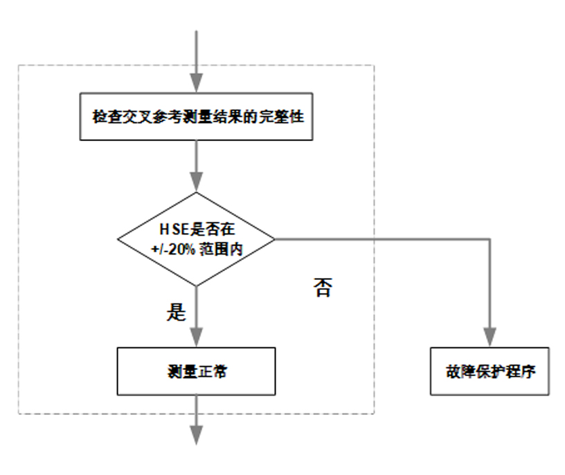
相关外设初始化¶
在前面有提到过，两个独立时钟源交叉检查来进行测量目前有两种实现方式，分别通过不同时钟源的定时器进行计算比较，另外一种通过输出 LSI 定时器捕获方式进行比较，MM32 的 ClassB 认证库中有提供了两种实现方式：
- 通过选择 LSI 作为时钟源的 IWDG 产生中断与选择 HSE 作为时钟源的 WWDG 或 TIM3 产生中断的方式进行交叉校验。
- 直接通过 LSI 输出 TIM3 捕获的方式，该种方式操作简单。
第一种方式，对TIM3，IWDG外设的初始化，以及相关的中断进行初始化配置，主要函数有：
HAL_StatusTypeDef Iwdg_Init(unsigned short int IWDG_Prescaler, unsigned short int Reload);
void TIM3_UPCount_test(u16 Prescaler, u16 Period);
ErrorStatus STL_InitClock_Xcross_Measurement(void);
void WWDG_Init(unsigned char ucTcnt, unsigned char ucWcnt);
HAL_StatusTypeDef Iwdg_Init(unsigned short int IWDG_Prescaler, unsigned short int Reload);
void WWDG_IWDG_IRQHandler(void);
时钟验证¶
时钟的验证可以分为 5 个步骤，如下所示：
- 保留上一次 TIM3 计数值；
- 读取当前的 TIM3 计数值；
- 计算 2 次 TIM3 的差；
- 设置相关标记位，做验证流程控制使用；
- 重设 LSI 时间；
void WWDG_IWDG_IRQHandler(void)
{
uint16_t tmpCC1_last_cpy;
IWDG->CTRL |= 0x00000002;
while ((IWDG->RLR) != 0xFFF)
{
}
/* store previous captured value */
tmpCC1_last_cpy = tmpCC1_last;
/* get currently captured value */
tmpCC1_last = (uint16_t)(TIM3->CNT);
/* The CC4IF flag is already cleared here be reading CCR4 register */
/* overight results only in case the data is required */
if (LSIPeriodFlag == 0u)
{
/* take correct measurement only */
{
/* Compute period length */
if (tmpCC1_last > tmpCC1_last_cpy)
{
PeriodValue = ((uint32_t)(tmpCC1_last) - (uint32_t)(tmpCC1_last_cpy)) & 0xFFFFuL;
}
else
{
PeriodValue = ((uint32_t)(tmpCC1_last) + SYSTCLK_AT_RUN_HSI / 1000 - 1 - (uint32_t)(tmpCC1_last_cpy)) &
0xFFFFuL;
}
PeriodValueInv = ~PeriodValue;
/* Set Flag tested at main loop */
LSIPeriodFlag = 0xAAAAAAAAuL;
LSIPeriodFlagInv = 0x55555555uL;
}
else
{
/* ignore computation in case of IC overflow */
}
}
Iwdg_Init(IWDG_Prescaler_4, (LSI_Freq / 4000 - 2));
EXTI_ClearITPendingBit(EXTI_Line24); //清除EXTI线24上的IWDG中断
}
/* HSE frequency above this limit considered as harmonics */
#define HSE_LimitHigh(fcy) ((uint32_t)(((fcy)/LSI_Freq)*8u*5u)/4u)
/* (HSEValue + 20%) */
/* HSE frequency below this limit considered as sub-harmonics*/
#define HSE_LimitLow(fcy) ((uint32_t)(((fcy)/LSI_Freq)*8u*3u)/4u)
/* (HSEValue - 20%) */
/* here you can define HSI frequency limits */
#define HSI_LimitHigh(fcy) ((uint32_t)(((fcy)*6))/(1000*2u*5))
/* (HSIValue + 20%) */
#define HSI_LimitLow(fcy) ((uint32_t)(((fcy)*4))/(1000*2u*5))
/* (HSIValue - 20%) */
ClockStatus STL_MainClockTest(void)
{#if 1
ClockStatus result = TEST_ONGOING; /* In case of unexpected exit */
CtrlFlowCnt += CLOCKPERIOD_TEST_CALLEE;
#ifdef __IAR_SYSTEMS_ICC__ /* IAR Compiler */
#pragma diag_suppress=Pm026
#endif /* __IAR_SYSTEMS_ICC__ */
/* checking result of HSE measurement done at TIM17 interrupt */
if (((PeriodValue ^ PeriodValueInv) == 0xFFFFFFFFuL) \
&& ((LSIPeriodFlag ^ LSIPeriodFlagInv) == 0xFFFFFFFFuL) \
&& (LSIPeriodFlag != 0u))
#ifdef __IAR_SYSTEMS_ICC__ /* IAR Compiler */
#pragma diag_default=Pm026
#endif /* __IAR_SYSTEMS_ICC__ */
/* { #ifdef HSE_CLOCK_APPLIED if (PeriodValue < HSE_LimitLow(SYSTCLK_AT_RUN_HSE)) #else if (PeriodValue < HSI_LimitLow(SYSTCLK_AT_RUN_HSI)) #endif { result = EXT_SOURCE_FAIL; /* Sub-harmonics: HSE - 20% below expected */
}
else
{
#ifdef HSE_CLOCK_APPLIED
if (PeriodValue > HSE_LimitHigh(SYSTCLK_AT_RUN_HSE))
#else
if (PeriodValue > HSI_LimitHigh(SYSTCLK_AT_RUN_HSI))
#endif
{
/* Switch back to internal clock */
result = EXT_SOURCE_FAIL; /* Harmonics: HSE + 20% above expected */
//result = FREQ_OK; /* Harmonics: HSE + 20% above expected */
}
else
{
result = FREQ_OK; /* Crystal or Resonator started correctly */
/* clear flag here to ensure refresh LSI measurement result will be taken at next check */
LSIPeriodFlag = 0u;
} /* No harmonics */
} /* No sub-harmonics */
} /* Control Flow error */
else
{
result = CLASS_B_VAR_FAIL;
}
CtrlFlowCntInv -= CLOCKPERIOD_TEST_CALLEE;
return result;
#endif
}
在此功能中，用户还可以通过高精度的HSI HSE校准 LSI，具体实现方式如下：
启用定时器计数后，当第一个参考信号上升沿发生时，捕捉定时器计数值，储存于 ReadValue1 中。在第二个上升沿，又捕捉到定时器计数，储存于 ReadValue2 中。在两个连续上升沿之间的时间 (ReadValue2 - ReadValue1)表示了参考信号的整个周期。
因为定时器计数器的时钟由系统时钟提供(内部 RC 振荡器 HSI 或 HSE)，因此与参考信号有关的内部 RC 振荡器生成的真正频率为：
Measuredfrequency = (ReadValue2 – ReadValue1) × referencefrequency
因此，内部振荡器频率误差表示为：
Error(Hz) = abs(Measuredfrequency - typicalvalue)
测试时间¶
ClassB 认证的各部分代码段运行都会增加 MCU 的负担，为防止认证代码影响应用控制，我们需要对各个部分代码执行时间进行测试，分时段利用时间空隙进行自检。耗时与很多因素有关系，MCU 的性能和开发环境都会有影响，在单次运行中执行启动测试，测试时间取决于 MCU 性能和测试区的大小。运行期间测试逐块执行，因此其时间也取决于被测试块大小和测试的重复频率。
用户需要在应用所需的性能和安全认证所需的性能之间找到平衡，主要挑战在于实现较短的整体诊断测试间隔，同时保持应用过程安全时间在可接受的长度范围内。在关键情况下，运行时测试可限制在收集关键代码或数据的区域。
用户应考虑到该间隔也用于在运行期间计算系统时钟和 LSI 之间的时钟交叉参考率，因而其长度不得低于时钟交叉测量所用的 LSI 周期数相应间隔。
当特定测试（RAM、Flash、时钟）启动时及每次完成测试程序（启动时和运行期间）时，通过切换 I/O 的翻转来测试各个部分的耗时。其中，在启动时和运行期间，这些 I/O 可用于测量测试长度、局部测试的频率及完成整个单测试周期所需的时间。完全检测被测试的专用区域后，一组局部测试又重新开始。
在 ClassB 自检的过程中，ClassB 自检流程分为启动自检与运行自检两个部分，本次例程我们将采用翻转 GPIO 口的方式来测试 ClassB 启动自检以及运行自检所花费的时间。
本次测试我们翻转 PA0 来进行计算时间(即在自检之前设置为低电平，自检完成以后设置为高电平，然后使用逻辑分析仪抓取低电平的持续时间即为自检部分花费的时间)。
启动自检¶
启动自检部分包含 CPU 寄存器自检，看门狗自检，FLASH 自检，RAM 自检以及时钟自检，启动自检的流程如下图所示：
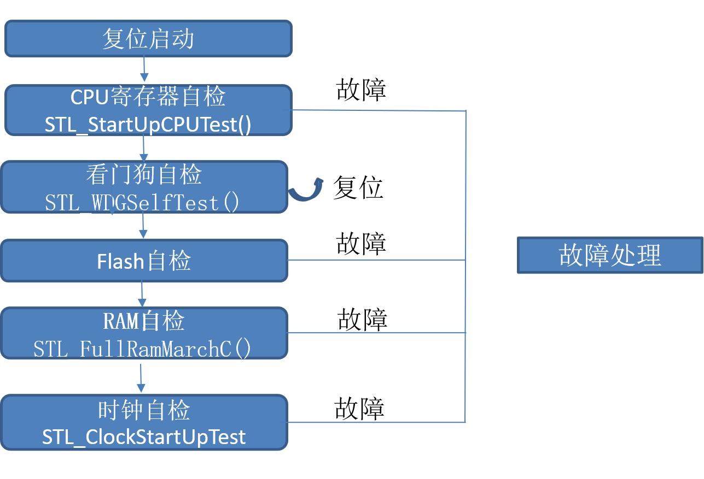
CPU寄存器自检¶
CPU 寄存器自检调用的函数为STL_StartUpCPUTest()，在此函数之前我们调用 GPIO 的配置函数，将 PA0 配置为低电平，在函数运行完成后将 PA0 配置为高电平，然后使用逻辑分析仪抓取两次电平翻转的脉宽即可，逻辑分析仪获取波形如下：
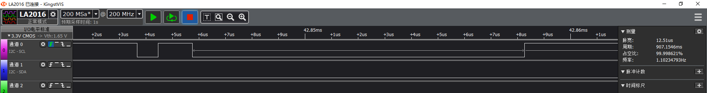
由上图可以看出 CPU 寄存器的启动自检的时间为12.51us。
看门狗自检¶
看门狗自检调用的函数为STL_WDGSelfTest() ，在此函数中进行 PA0 的翻转设置，其操作与 CPU 寄存器的操作一样，但是我们需要屏蔽掉 CPU 寄存器自检操作过程中 PA0 的翻转操作。

由上述逻辑分析仪抓取的波形可知看门狗自检花费的时间为 3.591ms。
FLASH自检¶
FALSH 自检操作在 FLASH 自检的地方对 GPIO 口进行翻转操作，逻辑分析仪获取波形如下：
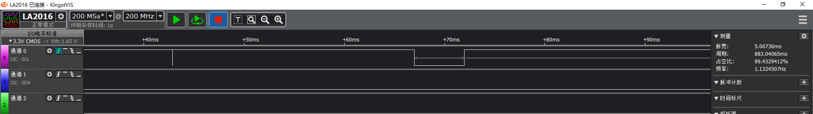
由逻辑分析仪抓取的波形可知 64K 的 FLASH 自检的时间为 9.36ms，其中包含 CRC 校验等耗费的时间。
RAM自检¶
RAM自检操作在RAM自检的地方对GPIO口进行翻转操作，逻辑分析仪获取波形如下：
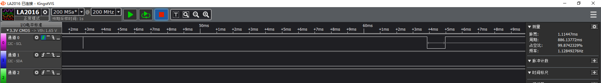
由上图可知 16K 的 RAM 启动自检花费的时间为 1.1ms。
时钟自检¶
时钟自检操作在时钟自检的地方对 GPIO 口进行翻转操作，具体操作如下：
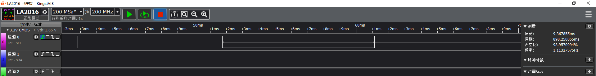
由上图可知在启动时时钟自检花费的时间为 9.37ms。
运行自检¶
运行自检耗时的测试方法与启动自检的方法一致，也是通过翻转 GPIO 来实现的。
运行自检周期直接调用函数 STL_DoRunTimeChecks() 函数即可，在函数中包含了所有的运行自检的流程，下面我们来测试运行自检花费的时间。
测试运行自检周期如下所示：
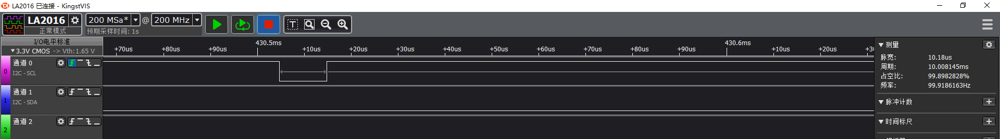
由上图可知，官方例程设置自检周期的时间为 10.008ms。
测试CPU寄存器运行自检所花费的时间如下所示：
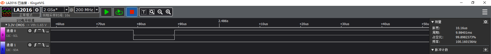
由上图可知 CPU 寄存器运行自检的时间为 10.18us。
运行期间的测试逐块执行，因此其时间也取决于被测试块大小和测试的重复频率，同时开发环境也影响执行效率，使用 IAR 和 MDK 开发的执行时间也有差异，本次实验系统时钟设置 48MHz，基于 MDK5.27 版本的工程测试得出的数据。
控制流程检查测试¶
程序流程控制¶
程序流程控制是在认证中我们建议加入的一种检测手段，这是因为它能确保所有特定代码能正确执行并按照一定的流程执行。
为了确保所有特定代码能正确执行并通过，代码流程中的所有关键点（组件测试块）能够按照程序设计思路正确执行，应定义独特的标签进行标记，从而确保不跳过任何块，并且所有流程均按照程序设计思路能够正常执行。
其实现原理是在每次处理任何重要的测试块时，两个互补计数器的值（增加或减去独特的标签值）发生对称的四步变化，其中两个检查步骤安排在调用程序（主流程）层的调用块外。这确保了块从主流程层级被成功调用（在调用前及从调用程序返回后处理）。下两个步骤是在调用程序内执行，以确保块正确完成（在进入程序后及从程序返回前处理）。
按控制流程顺序调用执行组件测试的例程，显示四步检查服务。因为所有的点都通过计算一组互补计数对来检查，所以该方法可降低CPU的负载。由于有些调用/返回编号及进入/退出点始终相同，在每个块完全通过后，储存在计数对内的值必须始终互补。检查计数对完整性时，对几个执行流程检查点进行评估并放入代码流程。如果任何检查点的计数器不互补或其不包含预期值，应调用故障保护例程。
当程序计数器丢失或终止时，两个不同的看门狗可复位设备，它们在两个独立的时钟源运行。窗口看门狗由主振荡器驱动，可执行时隙监控，独立看门狗由内部低速RC振荡器驱动。程序控制流程可采用专用软件方法监控。
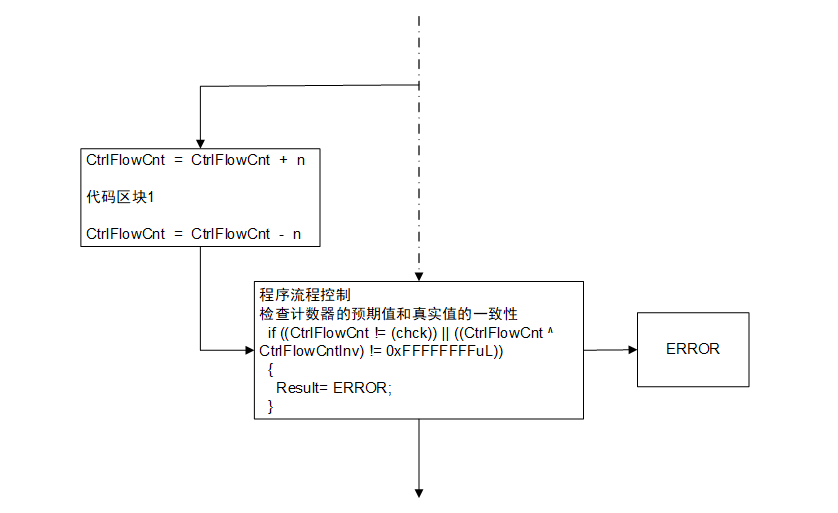
在 MM32 的 ClassB 认证的函数库中的程序控制流程检查函数如下：
ErrorStatus control_flow_check_point(uint32_t chck)
{ ErrorStatus Result= SUCCESS;
if ((CtrlFlowCnt != (chck)) || ((CtrlFlowCnt ^ CtrlFlowCntInv) != 0xFFFFFFFFuL))
{
Result= ERROR;
}
return(Result);
}
栈边界检测¶
该测试主要用来检测 MCU 在运行的过程中是否出现栈溢出的问题。
根据 IEC60730-1 B 类认证标准，栈溢出检测不是强制性的。它们可在用于间接测试某些功能时添加，如果用户喜欢使用其它方法，也可将其禁用或跳过。
其实现原理为：通常采用的做法是在 stack 创建之初就填充满固定的字符(比如0x5a5a5a5a)，如果发生了“上溢”，那么 stack 末端(最低地址处)的填充字符则有可能会被更改。
在 MM32 自检库中也是采用这一个实现方式，在栈底设定特定的数值，在每次进行检测的时候检测栈底的数值，当栈底的数值发生变化的时候就判断栈溢出了。具体的流程图如下所示：
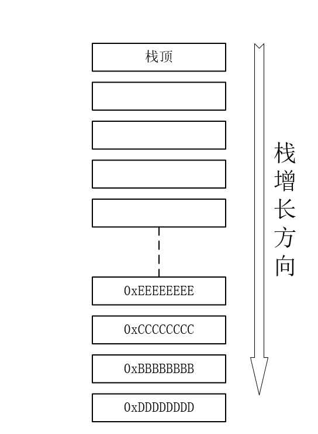
在栈底地址填写数据：
control_flow_call(STACK_OVERFLOW_TEST);
aStackOverFlowPtrn[0] = 0xEEEEEEEEuL;
aStackOverFlowPtrn[1] = 0xCCCCCCCCuL;
aStackOverFlowPtrn[2] = 0xBBBBBBBBuL;
aStackOverFlowPtrn[3] = 0xDDDDDDDDuL;
control_flow_resume(STACK_OVERFLOW_TEST);
/******************************************************************************/
ErrorStatus STL_CheckStack(void)
{
ErrorStatus result = SUCCESS;
CtrlFlowCnt += STACK_OVERFLOW_CALLEE;
if ( aStackOverFlowPtrn[0] != 0xEEEEEEEEuL )
{
result = ERROR;
}
if ( aStackOverFlowPtrn[1] != 0xCCCCCCCCuL )
{
result = ERROR;
}
if ( aStackOverFlowPtrn[2] != 0xBBBBBBBBuL )
{
result = ERROR;
}
if ( aStackOverFlowPtrn[3] != 0xDDDDDDDDuL )
{
result = ERROR;
}
CtrlFlowCntInv -= STACK_OVERFLOW_CALLEE;
return (result);
}
B类安全方案软体结构¶
用户应用的集成¶
在上面的几个章节中我们可以了解到，ClassB 类认证分为启动自检和运行自检，在系统复位完成以后然后进行 ClassB 相关的启动自检，启动自检完成以后用户可以进行相应的用户应用初始化操作，然后会进行到主循环进行运行自检以及客户任务的处理操作，具体的启动以及定期运行时自检结构框图如下：
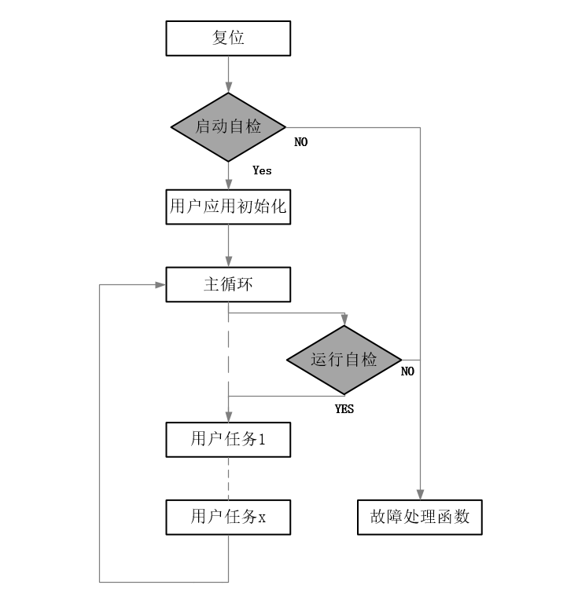
用户需要做 ClassB 认证时候，仅仅需要将 MM32 提供的官方例程中的启动自检与运行自检加入到相应的代码段即可。
自检驱动接口文件¶
用户在参考 MM32-ClassB 的例程的时候可以参考下面的表格来进行文件的移植操作。
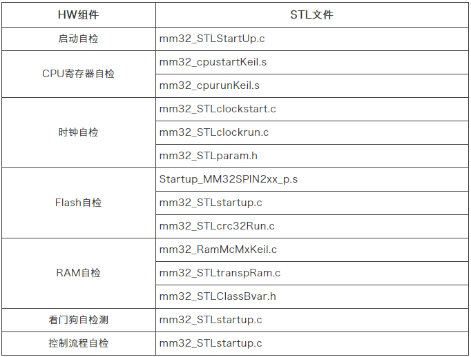